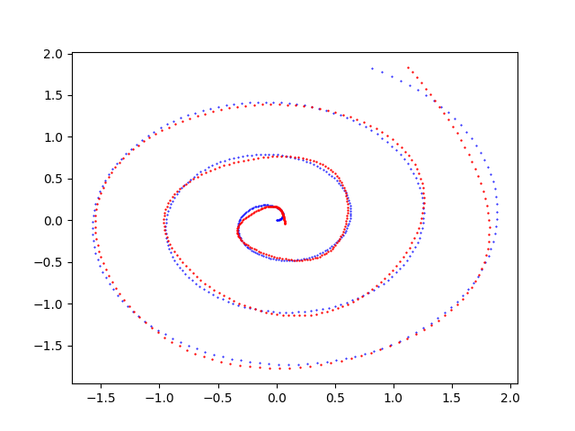

Parametric curve on plane fitting with TensorFlow
This post is part of a series of posts on the fitting of mathematical objects (functions, curves and surfaces) through a MLP (Multi-Layer Perceptron) neural network;
for an introduction on the subject please see the post Fitting with highly configurable multi layer perceptrons.
The topic of this post is the fitting of a parametric curve on a Cartesian reference system $Oxy$ with parameter $t$ within a closed interval of reals is defined with a pair of real functions $x(t) \colon [a,b] \to \rm I\!R$ and $y(t) \colon [a,b] \to \rm I\!R$
that return respectively the values of $x$ and $y$ coordinates as the parameter $t$ changes;
equivalently a parametric curve on plane is also defined with a vector function $f(t) \colon [a,b] \to {\rm I\!R x \rm I\!R}$ in this way: $$f(t) = \begin{bmatrix} x(t) \\ y(t) \\ \end{bmatrix}$$
where the two components of the vectors of the function image are respectively the $x$ and $y$ coordinates of the curve on Cartesian reference system.
Note that the two definitions of parametric curve, albeit mathematically equivalent, suggest two different architectures of neural networks:
the first definition leads to a pair of independent MLPs, one to fit $x(t)$ and the other one to fit $y(t)$ to then combine the results from the two networks and obtain the $(x,y)$ pairs that fit the curve on plane;
the second definition instead suggests a single MLP where the input layer contains only one neuron because the dimension of domain is 1
instead the output layer contains 2 neurons because the dimension of codomain is 2.
As part of the fitting is to allow the user to test different combinations of MLP architectures, their own activation functions, training algorithm and loss function
without writing code but working only on the command line of the four Python scripts (plus two variants) which separately implement the following features:
- Dataset generation
- MLP architecture definition + Training
- Prediction
- Visualization of the result
To get the code please see the paragraph Download of the complete code at the end of this post.
The exact same mechanism was created using PyTorch technology; see the post Parametric curve on plane fitting with PyTorch always published on this website.
Dataset generation
Goal of the pmc2t_gen.py Python program
is to generate datasets (both training and test ones) to be used in later phases;
it takes in command line the two component functions to be approximated (in lambda body syntax), the interval of independent parameter $t$ (begin, end and discretization step)
and it generates the dataset in an output csv file applying the two function to the passed interval of the parameter $t$.
In fact the output csv file has three columns (without header): first column contains the sorted values of independent parameter $t$ within the passed interval discretized by discretization step;
second and third columns contain respectively the values of the components $x$ and $y$, ie the values of functions $x(t)$ and $y(t)$ correspondent to values of $t$ of first column.
To get the program usage you can run this following command:
$ python pmc2t_gen.py --helpusage: pmc2t_gen.py [-h]
-h, --help show this help message and exit
--dsout DS_OUTPUT_FILENAME dataset output file (csv format)
--xt FUNCX_T_BODY x=x(t) body (lamba format)
--yt FUNCY_T_BODY y=y(t) body (lamba format)
--rbegin RANGE_BEGIN begin range (default:-5.0)
--rend RANGE_END end range (default:+5.0)
--rstep RANGE_STEP step range (default: 0.01)An example of using the program pmc2t_gen.py
Suppose you want to approximate the spiral of Archimedes in the range $[0.0,20.0]$ described by the following function: $$f(t) = \begin{bmatrix} x(t)=\frac{1}{10} t \cos t \\ y(t)=\frac{1}{10} t \sin t \\ \end{bmatrix}$$ Keeping in mind that np is the alias of NumPy library, the translation of this function in lambda body Python syntax is:
0.1 * t * np.cos(t)
0.1 * t * np.sin(t)$ python pmc2t_gen.py \
--dsout mytrain.csv \
--xt "0.1 * t * np.cos(t)" \
--yt "0.1 * t * np.sin(t)" \
--rbegin 0.0 \
--rend 20.0 \
--rstep 0.01$ python pmc2t_gen.py \
--dsout mytest.csv \
--xt "0.1 * t * np.cos(t)" \
--yt "0.1 * t * np.sin(t)" \
--rbegin 0.0 \
--rend 20.0 \
--rstep 0.0475MLP architecture definition + Training
This feature has two different implementations according to the two mathematical definitions of parametric curve on plane: the official implementation is the one that fits the vector function using a single MLP
instead the Twin variant implementation fits the component functions separately using two twin MLPs.
The official version implemented by Python program pmc2t_fit.py
creates dynamically an MLP and performs its training according to the passed parameters through the command line in order to fit the vector function that defines the curve on plane.
The Twin variant implemented Python program pmc2t_fit_twin.py
creates dynamically an pair of twin MLPs and performs their training according to the passed parameters through the command line in order to fit the separately the component functions that defines the curve on plane.
To get the official program usage you can run this following command:
$ python pmc2t_fit.py --helpusage: pmc2t_fit.py [-h]
--trainds TRAIN_DATASET_FILENAME
--modelout MODEL_PATH
[--epochs EPOCHS]
[--batch_size BATCH_SIZE]
[--hlayers HIDDEN_LAYERS_LAYOUT [HIDDEN_LAYERS_LAYOUT ...]]
[--hactivations ACTIVATION_FUNCTIONS [ACTIVATION_FUNCTIONS ...]]
[--optimizer OPTIMIZER]
[--loss LOSS]$ python pmc2t_fit_twin.py --helpPlease read the file README.md for a complete detail of the semantics of the parameters supported on the command line of both programs.
An example of using the program pmc2t_fit.py
Suppose you have a training dataset available (for example generated through pmc2t_gen.py program as shown in the previous paragraph)
and you want the MLP to have three hidden layers with respectively with 200, 300 and 200 neurons and that you want to use the sigmoid activation function output from all three layers;
moreover you want to perform 500 training epochs with a 200 items batch size using the Adamax optimizator algorithm with learning rate equal to 0.02
and loss function equal to MeanSquaredError. To put all this into action, run the following command:
$ python pmc2t_fit.py \
--trainds mytrain.csv \
--modelout mymodel \
--hlayers 200 300 200 \
--hactivation sigmoid sigmoid sigmoid \
--epochs 500 \
--batch_size 200 \
--optimizer 'Adamax(learning_rate=0.02)' \
--loss 'MeanSquaredError()'mymodel will contain the MLP model trained on mytrain.csv dataset according to the parameters passed on the command line.
Prediction
As with training, this feature also has two different implementations according to the two mathematical definitions of parametric curve on plane: the official implementation that makes the prediction using a single pre-trained MLP that fits the curve defined by a vector function
and the Twin variant that makes the prediction using a pair of pre-trained twin MLPs that fit separately the two component functions.
Goal of the official version implemented by pmc2t_predict.py Python program
is to apply the MLP model generated through pmc2t_fit.py to an input dataset (for example generated through pmc2t_gen.py program as shown in a previous paragraph);
the execution of the program produces in output a csv file with three columns (without header): the first column contains the values of indepedent parameter $t$ taken from input dataset
and the second and third columns contain the predicted values of the two components, ie the values of the prediction that fits the parametric curve $f(t)$ correspondent to values of $t$ of first column.
Goal of the Twin variant implemented by pmc2t_predict_twin.py Python program
is to apply the pair of MLPs generated through pmc2t_fit_twin.py to an input dataset (for example generated through pmc2t_gen.py program as shown in a previous paragraph);
the execution of the program produces in output a file structurally equal to the output one of official version; the way to compute the values of second and thrid columns is different because these are the values of predictions coming out from the two MLPs that fit separately the component functions $x(t)$ and $y(t)$.
To get the official program usage you can run this following command:
$ python pmc2t_predict.py --helpusage: pmc2t_predict.py [-h]
--model MODEL_PATH
--ds DATASET_FILENAME
--predictionout PREDICTION_DATA_FILENAME$ python pmc2t_predict_twin.py --helpPlease read the file README.md for a complete detail of the semantics of the parameters supported on the command line.
An example of using the program pmc2t_predict.py
Suppose you have the test dataset mytest.csv available (for example generated through pmc2t_gen.py program as shown in a previous paragraph)
and the trained model of MLP in the folder mymodel (generated through pmc2t_fit.py program as shown in the example of previous paragraph); run the following command:
$ python pmc2t_predict.py \
--model mymodel \
--ds mytest.csv \
--predictionout myprediction.csv
myprediction.csv will contain the fitting of the initial function.
Visualization of the result
Goal of the pmc2t_plot.py Python program
is to visualize the prediction curve superimposed on initial dataset curve (test or training, as you prefer) and it allows the visual comparison of the two curves.
To get the program usage you can run this following command:
$ python pmc2t_plot.py --helpusage: pmc2t_plot.py [-h]
--ds DATASET_FILENAME
--prediction PREDICTION_DATA_FILENAME
[--savefig SAVE_FIGURE_FILENAME]An example of using the program pmc2t_plot.py
Having the test dataset mytest.csv available (for example generated through pmc2t_gen.py program as shown in a previous paragraph)
and the prediction csv file (generated through pmc2t_predict.py program as shown in the previous paragraph), to generate the two xy-scatter charts, execute the following command:
$ python pmc2t_plot.py \
--ds mytest.csv \
--prediction myprediction.csvNote: Given the stochastic nature of the training phase, your specific results may vary. Consider running the example a few times.

Chart generated by the program
pmc2t_plot.py that shows the fitting done by the MLP of the spiral of Archimedes $f(t) = \begin{bmatrix} x(t)=\frac{1}{10} t \cos t \\ y(t)=\frac{1}{10} t \sin t \\ \end{bmatrix}$Examples of cascade use of the four programs
In the folder parametric-curve-on-plane-fitting/examples
there are five shell scripts that show the use in cascade of the four programs, with training and prediction in the official version, in various combinations of parameters
(MLP architecture, activation functions, optimization algorithm, loss function, training procedure parameters).
Also there are five other shell scripts that reproduce the same examples but with with training and prediction in the Twin variant.
To run the five examples for official version, run the following commands:
$ cd parametric-curve-on-plane-fitting/examples
$ sh example1.sh
$ sh example2.sh
$ sh example3.sh
$ sh example4.sh
$ sh example5.sh
$ cd parametric-curve-on-plane-fitting/examples
$ sh example1_twin.sh
$ sh example2_twin.sh
$ sh example3_twin.sh
$ sh example4_twin.sh
$ sh example5_twin.sh
Download of the complete code
The complete code is available at GitHub.
These materials are distributed under MIT license; feel free to use, share, fork and adapt these materials as you see fit.
Also please feel free to submit pull-requests and bug-reports to this GitHub repository or contact me on my social media channels available on the top right corner of this page.